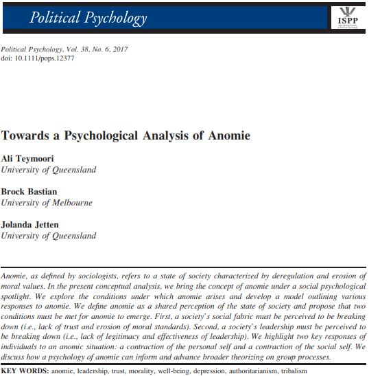

- Concept
- Psychological Concept
- to Burnout
Concept of Anomie
Towards a Psychological Analysis of Anomie

anomie는 사회학자 뒤르케임?뒤르깽?이 잘 정리해서 제안한 개념으로 알고 있다. 이 개념과 burnout을 연결하는 논문, 정확히는 anomie가 심리학적 개념의 특성을 갖고 있음을 설명하는 논문을 찾게 되어 여기에 정리한다.
Towards a Psychological Analysis of Anomie.
- Ali Teymoori, Brock Bastian, & Jolanda Jetten
- Political Psychology, Vol. 38, No. 6, 2017
The concept
- "A state of Society"(Durkheim, 1897/1987; Merton, 1938, 1968; Messner & Rosenfeld, 2001)
- the state of anomie exists at the interface b/w the individual and the social system
- anomie was used to describe the social roots of suicide(Durkheim, 1987/1987)
Purpose of Article
- presenting a psychological perspective: how anomie arises & how individuals respond to anomie
- help to develop insights into social context
- elucidating dynamic nature of social decay: how society sink into anomie & how microlevel individual responses may contribute to macrolevel societal perceptions